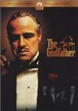

标题1
文本内容
标题2
文本内容
标题3
文本内容
 肖申克的救赎 | 剧情介绍: 阿瑞1927年因谋杀罪被判无期徙刑，数次假释都未获成功。年轻的银行家因被判决谋杀自己的妻子罪名成立，被送往美国的肖申克监狱终身监禁。他外表看似懦弱，但内心坚定，从进监狱的那天开始就决定一定要离开这里。 他在监狱里遇见了因失手杀人被判终身监禁的摩根・费曼，两人很快成为好友。肖申克监狱是当时最黑暗的监狱，点狱长利用罪犯做苦役，为自己捞了不少好处。 面对这样的环境，他没有自甘堕落，他办监狱图书室，为囚犯播放美妙的音乐，还利用自己的知识帮助大家打点自己的财务。典狱长很快的发现了他的特长，让他帮助自己清洗黑钱做假帐。 在监狱的黑暗生活里，他从未放弃过对自由、对美好生活的追求,他要用自己的实际行动来实现对自己的救赎！ ... |
|  教父1 | 剧情介绍: 1945年夏天，美国本部黑手党科莱昂家族首领，“教父”维托・唐・科莱昂为小女儿康妮举行了盛大的婚 礼。“教父”有三个儿子：好色的长子逊尼，懦弱的次子弗雷德和刚从二战战场回来的小儿子迈克。其中逊尼是“教父”的得力助手；而迈克虽然精明能干，却对家 族的“事业”没什么兴趣。“教父”是黑手党首领，常干违法的构当。但同时他也是许多弱小平民的保护神，深得人们爱戴。他还有 一个准则就是决不贩毒害人。为此他拒绝了毒枭素洛佐的要求，并因此激化了与纽约其它几个黑手党家族的矛盾。 圣诞前夕，素洛佐劫持了“教父”的大女婿汤姆， 并派人暗杀“教父”。“教父”中枪入院。素洛佐要汤姆设法使逊尼同意毒品买卖，重新谈判。逊尼有勇无谋，他发誓报仇，却无计可施。... |
 教父2 | 剧情介绍: 在西西里，少年时代的维托为报父仇，袭击了当地黑手党首领唐・乔奇。在母亲的掩护下，维托得以逃脱，并来到了美国。这已经是1901年的事了，第二代教父回忆起父亲的青年时代，不由得深深感到了创业的艰辛。迈克和妻子凯为儿子托尼举行了圣餐仪式和庆祝活动。但就在当夜，迈克遭到了袭击，凯受了伤。面对接管家族后所遇到的种种困难，迈克又回忆起了父亲唐・维托到美国后的“奋斗”历程。迈克尔一步步进行着复仇。同时他也在不断拓展家族的势力。通过与吉尔参议员勾心斗角的明争暗斗，迈克尔终于又控制住了一家大饭店，并开展了赌博生意。就在迈克尔扩大家族的势力时，大革命的爆发却使他的计划受到了严重的挫折... |
教父2 | 剧情介绍: 在警长戈登和地区检察官哈维・丹特的协助下，蝙蝠侠惩恶锄奸的行动越来越顺风顺水，他甚至决定要将穷街陋巷中残余的党匪一网打尽。三人联手打击犯罪成效不菲，高谭市渐渐回复了昔日的平静。甚至有人开始假伴成蝙蝠侠来惩治罪犯。在稻草人又一次被擒获，黑帮的洗钱工具劳在香港被蝙蝠侠缉拿，黑帮500多人一次性被起诉后，歌潭的未来一片光明。然而小丑的出现，给歌潭蒙上了阴影。他炸死女法官，毒死局长，又在全城哀悼，市长讲话之时射击市长，幸亏戈等警官相救，市长才幸免于难。小丑抓住了那些假伴成蝙蝠侠的人，并加以迫害，像全城宣布，除非蝙蝠侠摘下面具像警察自首，否则每天都有人死。哈维 丹特为了歌潭，宣称自己是蝙蝠侠... |